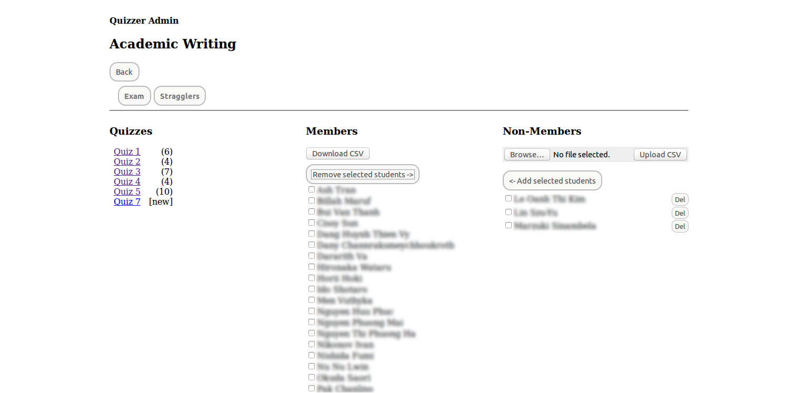

Overview
Quizzer is a simple quiz engine meant to support the small-scale needs of a single instructor (a few classes, a few hundred students). The code is incomplete as of this writing, but will be fully functional by end of January 2014.
Quizzer was originally conceived as a tool to support academic writing classes. The idea is to build quizzes from 400-word essays submitted by students, using grammatical errors, errors in usage, and examples of awkward expression as raw material (to add a peer-pressure element, the name of the student from whose essay each question is drawn can be displayed in each question). Typical workflow will be to construct questions with a bad example, an equally bad example, a corrected sentence, and a corrected sentence containing a common error. This is a manual process: we're not trying to eliminate the instructor here, but to help him or her to engage with students more effectively.
Students are registered on the system with a name an email address. Classes and class membership are managed with a simple menu-driven interface. Quizzes created for a class are sent to enrolled students with a click. For simplicity, the system uses access codes embedded in the URL for each quiz instance. There is no login at the student end: they just click on the link and take the quiz. The engine randomizes the sequence of questions and responses. Quiz responses are saved only when the full quiz has been completed. If the quiz page is refreshed before completion, the quiz is re-randomized, and starts over from the beginning. There is no time limit: this is a tool for study, rather than examination.
Final marking is automated (of course), and stored on the server in CSV format. The display of results can be collated on-screen by class performance on each question, or on student performance on the quiz as a whole, and the results can be downloaded for local record-keeping.
Administrators all have global write access within a Quizzer server instance. By default, the system uses the GMail SMTP server for mailing of quizzes.
Screenshots
Top page
The pages are barebones things. If you have web skills and a sense of aesthetics, you are very welcome to contribute! On the technical side, note the admin key in the address bar: you may want to put the admin interface behind a proper webserver with basic authentication.
Student list
Students can be added to the system either by uploading a CSV file containing name/email pairs, or by adding (or editing) student records individually in the browser.

Class list
Classes can be added either by uploading a CSV list of class names, or through the browser. The link on each class name opens to its editing screen.

Class screen
In the class screen, students can be added and removed from the list of enrolled students. Quizzes are linked to their respective editing screens (if not yet sent), or to the results display (after mailing). The system always offers at least one quiz in draft.

Quiz edit screen: initial view
Quizzes begin as an empty screen, with a single "Add question" button.

Quiz edit screen: adding a question
Clicking the "Add question" button opens the text-boxes for a fresh question.